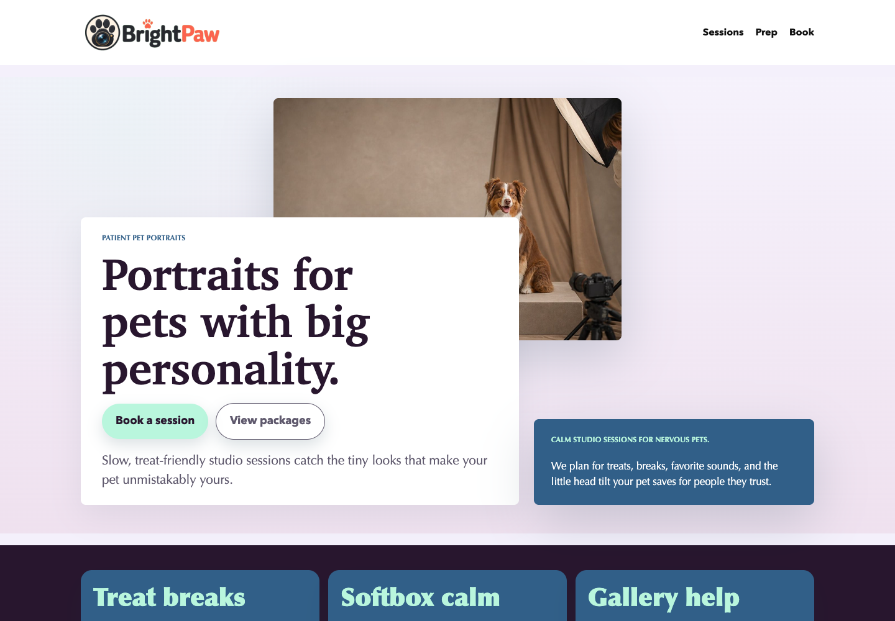
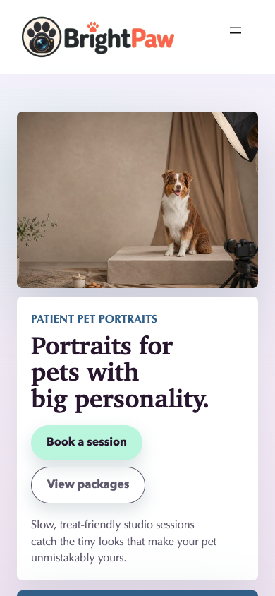

Concrete
Show an actual site, not a hypothetical flowchart.

Internal pitch kit
Site-O-Mattic turns narrow local-service niches into polished, Playground-ready block themes with brand assets, screenshots, accessibility checks, and one-click proof.

Live proof, not a deck
Slow, treat-friendly studio sessions catch the tiny looks that make your pet unmistakably yours.
Show an actual site, not a hypothetical flowchart.
Every demo opens in WordPress Playground from a hosted Blueprint.
JSON, screenshots, assets, and production specs stay visible.

Balloon Garland And Party Backdrop Styling
PopArc designs balloon garlands, backdrop moments, and photo-ready party corners with clear sizing, color notes, setup timing, and teardown options.

Carpet And Upholstery Cleaning Service
FreshThread cleans sofas, rugs, stairs, and carpets with fabric-smart extraction, tidy setup, and drying notes that keep the room usable instead of mysterious.

Closet And Pantry Organization Service
Shelfwise builds closets and pantries around reach height, repeat groceries, laundry habits, morning exits, and the items that always wander back to the wrong place.

Coffee Cart Catering Service
Cartwright rolls in with a polished espresso cart, friendly baristas, and a tight drink menu that keeps guests moving, caffeinated, and gently impressed.

Deck And Fence Staining Service
Send rail, picket, shade, peeling, and old-finish photos. CedarLine turns them into prep notes, color direction, and a clean stain window.

Dessert Table And Bakery Catering
Sugarline plans the look, quantities, flavors, setup timing, and serving details so the table feels generous, styled, and easy for guests to enjoy.

Driveway Sealcoating Service
Blackline cleans, fills small cracks, and seals tired asphalt with tidy passes that make your driveway look cared for before the next rain gets ideas.

Furniture Refinishing And Repair Service
GrainMend repairs worn edges, tired finishes, wobbly joints, and beloved wood pieces with a practical photo estimate and a finish plan you can understand.

Garage Organization Service
GridNest turns the mystery wall, seasonal pile, tool drift, and sports gear shuffle into a clean garage system that still works after real life walks through it.

Gutter Cleaning Service
ClearFlow clears packed leaves, roof grit, seed pods, and surprise sludge so rainwater moves through the gutters instead of auditioning for your foundation.

Headshot And Brand Photography Studio
FrameForge guides wardrobe, lighting, expression, usage needs, and delivery so your headshots feel current, credible, and still recognizably you.

Holiday Light Installation Service
RidgeGlow maps rooflines, clips, outlets, timers, ladder access, install week, and takedown labels before the first strand goes up.

Interior Color Consultant
HueHaus helps homeowners narrow paint, trim, cabinet, and room palettes using light, finishes, samples, and how the space really gets lived in.

Junk Removal And Donation Hauling Service
ClearPath hauls bulky items, garage leftovers, move-out piles, and donation-worthy goods with fast photo estimates, tidy crews, and a sweep-up finish.

Lawn Care Service
GreenStripe runs tidy neighborhood routes for mowing, edging, bed touch-ups, and post-visit gate checks, so your yard looks handled before the weekend shows up.

Micro-wedding Floral Design
VowSprig shapes bouquets, personals, bud vases, and small ceremony moments into a clear palette, setup plan, and floral scope that fits intimate celebrations.

Mobile Auto Detailing Service
ShineShift brings foam, filtration, careful towels, interior tools, and a clean finish routine to your home or office without turning the curb into chaos.

Mobile Bicycle Repair Service
TuneLoop brings the stand, tools, parts check, and calm mechanic energy to your curb, office, or building bike room so small problems stop stealing whole weekends.

Mobile Knife Sharpening Service
EdgeRoute brings a tidy bench to route stops, refreshes hardworking kitchen edges, and sends every blade home with simple care notes.

Mocktail And Beverage Cart Service
SpritzLoop brings zero-proof drinks, citrus, herbs, glassware, and a tidy cart setup for events that want the fun without alcohol.

Mural And Window Lettering Artist
LetterLoom turns surface photos, scale notes, and brand color into painted storefront moments with clean install timing.

Pet Portrait Photography Studio
Slow, treat-friendly studio sessions catch the tiny looks that make your pet unmistakably yours.

Photo Booth Rental Service
FlashDash brings a sharp booth setup, clean props, backdrop options, and a host-friendly arrival plan so the photo corner never becomes a mystery table.

Picnic And Proposal Setup Service
Linen & Lantern creates styled picnic and proposal moments with linens, florals, cushions, timing notes, access planning, and a calm backup plan if weather gets theatrical.

Houseplant And Office Plant Care Service
LeafDesk reads light, soil feel, drainage, pruning needs, and plant stress before setting a care rhythm for calmer homes and offices.

Pollinator Garden Refresh Service
BloomRoute refreshes front-yard beds with native flowers, soft grasses, tidy edges, and planting plans that make bees happy without making your walkway disappear.

Pool Cleaning Service
BlueLane keeps the skim, brush, baskets, and chemistry on a simple route so the pool is ready before anyone asks if it is safe to jump in.

Pressure Washing And Soft Washing Service
BrightJet cleans driveways, siding, patios, fences, and storefronts with smart pressure, soft-wash care, and crews who treat your place like it has company coming.

Senior Downsizing And Move Prep Service
KindMove helps families sort, label, donate, pack, and plan the next chapter with steady hands, clear categories, and room for the stories that come with the boxes.

Small-event DJ And Sound Service
SoundNest handles music flow, microphones, compact speakers, clean cables, and readable volume so small events feel alive without swallowing the room.

Smart Home And Home Theater Setup Service
SignalNest turns TVs, soundbars, streaming boxes, remotes, speakers, and mystery cables into a clean setup that your whole household can actually use.

Solar Panel Cleaning Service
SunWash washes dusty, pollen-coated, and bird-marked panels with soft brushes, filtered water, safety-minded roof access, and before/after panel notes you can actually read.

Vacation Rental Turnover Cleaning Service
Turnkey Tidy resets beds, baths, kitchens, entry details, linens, and restocks with clear host notes so every turnover feels tracked, not guessed.

Window Cleaning Service
Interior glass, exterior panes, screens, and tracks handled with careful edges and a clear quote before anyone arrives.

Wood-fired Pizza And Taco Pop-up Catering
Ember & Masa brings wood-fired pies, taco boards, prep tables, and a calm crew so your party gets the theater without the kitchen panic.